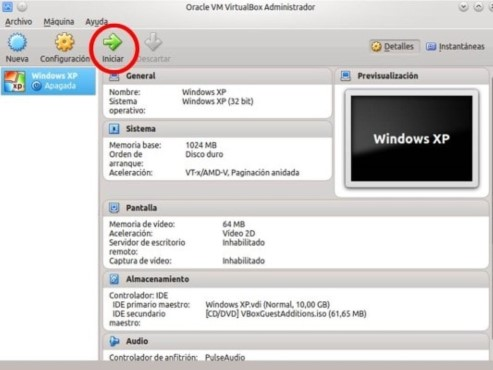
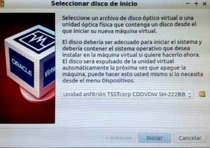

SARRERA
Erronka honetan gure ordenagailua prestatu beharko dugu Euskaltegiarako ondorioz, partizioak egin beharko ditugu orretarako USB batean Hiren´s Boot sartuko dugu, aplikazio honek “Parted Magic” dakar barruan. Honekin, partizioak egin, ezabatu, eta tamainaz aldatzeko aukera izango dugu.
Sistema Eragile bat instalatuko dugu gure kasuan Lubuntu izango da , aplikazioak lagungarri batzuk instalatuko ditugu bertan VirtualBox aplikazioa deskargatuko dugu (makina birtual bat da non S.E. batzuk probatu ditzazkegu), barruan, ISO batekin gure kasuan Windows XP sistema eragilea kargatuko dugu behin hori eginda System back softwarekin ordenagailuaren ISO bat egingo dugu.
ISO-a engin ondoren gure VirtualBox-en kargatuko dugu eta ikusiko dugu, aplikazio guztiak instalatuta daudela.
Bukatzeko gure ordenagailuaren irudi bat egingo diogu.
PARTIZIOAK
Partizioak egiteko, Hiren´s Boot 15.04 Live CDa erabili behar dugu. Behin ekipoan sartu dugula, CDtik arrankatuko dugu, horretarako, gure kasuan, F8 teklari emango diogu. Behin sartu garela, “Linux based rescue enviroment” direktorioan sartuko gara.

Behin hor sartu garela, PartedMagic Sistema Eragilea agertuko zaigu, mahigainan GParted programa irekiko dugu, hori erabiliko dugu partizioak egiteko.

Behin irekita dugula, partizioak egiten hasiko gara, horretara lehendik egindako dagoen guztia formateatuko, hau da lehendik zeuden partizioak ezabatu eta berriak egingo ditugu.
Behin dena formateatu dugula, hurrengo partizioak egin ditugu.
Lehenengo partizioa Lubuntuntzako egin genuen, ondoren linux-swap partizioa egin genuen eta bukatzeko irudik sartzeko partizio bat “irudiak” izenarekin eta beste bat datuak gordetzeko “datuak” izenarekin.

Behin partizio guztiak egin ditugula, ordenagailua berrebiarazi eta Lubuntu S.E instalatuko dugu, sistema eragile hau arina denez, ez diogu hainbesteko espazio eman disko gogorrean. Gainera bere instalazioa nahiko orientatiboa da, baino, arazorik ez edukitzeko, hemen duzue Lubunturen instalazioa:
Lubuntu instalatzen:
Behin diskoa sartu dugula, ekipoa CDtik booteatuko dugu, F8 tekla sakatuz.
Behin abiarazi zaigula, “Instalar Lubuntu” opzioari sakatuko diogu.
Segidan, hezkuntza aukeratu beharko dugu. Orain, Lubuntuk, ikusiko du ea gure ordenagailua gai den Lubuntu abairazteko. Gai baldin bada, aurrera jarraitzeko aukera emango digu, baino, gure kasuan “Instalar este software de terceros” opzioa gehitu genuen, horrela, ez genuen ezer deskargatu behar.

Hurrengo leihoan, zein instalazio mota nahi dugun galdetuko digu, normalean, besteren S.E. bat instalatuta baldin badugu, “Mas opciones” emango genuen, baino, oraingo kasuan, bakarrik Lubuntu instalatu behar dugunez, “Borrar disco e instalar” opzioari eman genion.

Hemendik aurrera ordenagailuko datuak galdetuko dizkigu, ordua, ekipo-izena, erabiltzailea… jarri beharko ditugu.
Behin hori guztia jarri dugula, instalatzea bakarrik itxaron beharko dugu.
Orain, Lubuntu instalatuta dugula, aplikazio batzuk instalatuko ditugu, aurrerago lagungarriak izango direnak:
Ubuntu Tweak
Multimedia: vlc, audacity, soundconverter, avidemux
LibreOffice
Gimp.
Mahaigaina grabatzeko screencast sw-a: ScreenStudio, RecordMydesktop
Birtualizaziorako: virtualbox . Aurrerago Windows XP sistema eragilea instalatuko da makina birtual batean.
Partizioak kudeatzeko: gparted
Arakatzaileak: flash player plugin-a chrome edo firefox-en
Hauek komandoen bidez instalatu ditzazkegu edo Lubuntu Software Zentrotik hartu ditzazkegu
Gure kasuan, aplikazio batzuk komandoen bidez instalatu genuen eta beste batzuk berriz, adibidez VirtualBox, Lubunturen software zentrotik deskargatu genuen.
Komandoak bilatu ahal izateko, nahikoa izango da www.google.es bilatzailean bilatzea eta lehengo web-orritean agertuko da.
VirtualBox:
VirtualBox-en sartzen garenean, “nuevo” jarten duen lekuan sakatuko dugu.

behin botoi hori hemanda, izena jarriko diogu eta bertsioa aukeratuko dugu.
Ondoren konfigurazio hauek hemango diogu.
eta azkenik crear emango diogu.
Hau eginda makina sortuko zaigu, instalatuko dugun sistema eragilearen izenarekin eta iniciar emango diogu.

behin ori eginda, makina irekitzen asiko da baino nola ez diogu esan zer ISO nahi dugun irekitzea, berak galdetuko digu eta hor ISO-a aukeratuko dugu.

eta ondoren iniciar emango diogu. Hori egin ondoren Windows XP-ren instalazioarekin asiko ginateke.
Irudiak clonezilla
Gure ordenagailua ondo dagoela edo guk nahi dun moduan doagoela konprobatu ondoren irudi bat egingo diogu,horretarako, Clonezilla erabiliko dugu. Lehenego eta behin Hiren´s Boot 15.04 Live CDa jarriko dugu eta ordenagailua beriztuko dugu. CDtik booteatzeko, gure kasuan F8 teklari emanez, boot menua agertzen da, bestela BIOS-ean sartu beharko gara eta SETUP programarekin aldatu.
Lehengo eta behin jakin behar duzue Clonezilla ez dela oso intuitiboa, ondorioz, hurrrengo pausoak jarraituko ditugu.
Behin CDtik arrankatu duela, “Linux based rescue enviroment” direktorioan sartuko gara
Behin sartu garela, Clonezillan sartuko gara, “Disk Cloning” programa izenarekin agertzen dena.
Jarraian lehio bat irekiko zaigu, hor, “device-image work with disk or patitions using images”
aukeratuko dugu.

Jarraian, “local_dev” aukeratuko dugu adierazteko ekipo lokalarekin (gurea) lan egingo dugula.
Orain zein partizioan gordeko dugun aukeratu behar dugu, ondorioz, Irudiak partizioa aukeratuko dugu eta jarraitu egingo dugu.

Jarraian bi opzioa agertuko dira, guk “Beginner mode” hartuko dugu, konfigurazio normala edukitzeko. Orain zer egingo dugun aukeratuko dugu, horretarako, “saveparts” opzioa aukeratuko dugu.

Segidan izena jarri beharko diogu irudiari.
Bukatzeko zein partizioaren irudia egin behar den aukeratuko dugu, behin aukeratuta, OK-ri emango diogu eta segidan “Yes, check the saved image” -ri emango diogu. Behin irudia bukatuta “Enter”-ri emango Clonezillatik ateratzeko.
Systemback
systemback-etik ordenagailu osoaren ISO bat egiteko, lehendabizi, programa ireki ondoren,“crear un sistema live” emango diogu.
hori egin ondoren “crear nuevo” emango diogu eta sistema berria sortuko digu.
behin sistema berria sortuta “convertir a ISO” emango diogu eta ISO-a sortuko zaigu.
ISO hori virtualBox-en probatu genuen eta ondo kargatzen zuela ikusi genuen.
ONDORIOAK
hasieran sortutako ISO-a ez zigun VirtualBox-en kargatzen eta BIOS-etikan virtualizazioa opzioan aldatu genuen, virtualizazioa uzteko eta hori egin ondoren dena ondo zihoan.